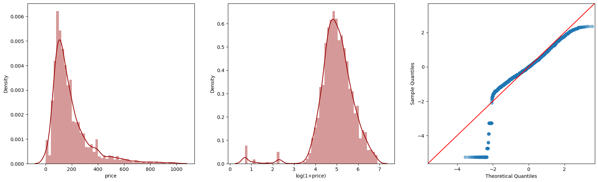

2. Predict Airbnb Price
To predict Airbnb Price, we will go through the following 5 parts:
Data Exploratory
Feature Engineering
Feature Collect
Model Building
Predict
2.1 Data Exploratory

Firstly, we analyze the distribution of Airbnb prices via two histograms of Prices & log-transformed prices and a Quantile-Quantile. Through all these three plots, we get that while most prices are clustered at a lower range, there is significant variation and potentially many outliers on the higher end. To avoid unaccuracy of price predicting, we will delete some outliers and NA values before the next feature engineering section.
Again, we plot spatial distribution of Airbnb price in the form of both points and neighbourhood. A high spatial autocorrelation phenomenon can be easily caught above, which will help us do a better feature selection in the next step.
2.2 Feature Engineering
2.2.1 Current Feature Investigation
After filtering all NA values, we get a nice distribution of features above via missingno package.
2.2.2 Feature Collect
Since Airbnb price will not only affected by propeties itself, it can also affected by nearby neighborhood properties. We select the following six factors for our feature preparation:
- Crime
- 311
- Civic Art Collection
- Recreation and Parks Properties
- Bicycle Parking
- Restaurant
For each feature collect process, we go through these 3 steps:
- Get data during URL
- Extract ‘Latitude’ and ‘Longitude’ from the original dataset
- Convert the dataset into geodataframe
2.2.3 KNN methods of features
To get a better details spatail learning, we add KNN method of six features via the following 6 steps
- Step1: Extract x/y from crime
- Step2: Initialize the algorithm
- Step3: Fit the algorithm on the “neighbors” dataset
- Step4: Get distances for airbnb to
- Step5: Average distance to neighbors
- Step6: Set zero distances to be small, but nonzero

2.3 Correlation Analysis

Have both Airbnb property feature and nearby neighbourhood feature prepared, we did a correlation analysis as above. It seems crime , 311 call, and art data has strong correlations while other features not, which can be a good indicator for future model iteration.
2.4 Model Fit
During model fit process, we choose randomforest regression model and mainly go through the following steps:
- Split data by 70% for training set and 30% for test set.
- set “price” as the target labels for both train and test sets
- Set up a pipeline that includes both numerical columns and categorical columns
- Initialize the pipeline
- Fit the model with training set
Next, We got the following testing score by implement the baseline model on test set.
Testing Score = 0.34280431620306995
The Score is moderate.
For a better model iteration, we need to know more about the feature importance, as we can see from the plot below, the top 5 important features are:
- accommodates
- beds
- LaggedPrice
- minimum_nights
- log_crime
2.5 Model Evaluation
For model evaluation steps, we calculated the predicted price, percent error as well as absolute percent error for each observation. To better understand the spatial autocorrelation, we plotted both the spatial distribution of the percent error and the mean absolute percet error by neighborhood in test set.

From the plot above, we can see that the errors of prediction Airbnb price do have few spatial cluster, which means the effects of spatial autocorrelation still exist, which is in line with the observations we made in the previous correlation analysis stage.
In conclusion, although the model itself still has improvement space, we have identified the flaws and the direction for iteration. After removing some interrelated features and adding more features, our model can better assist users in predicting house prices, while also helping hosts make better adjustments and plans for their properties.